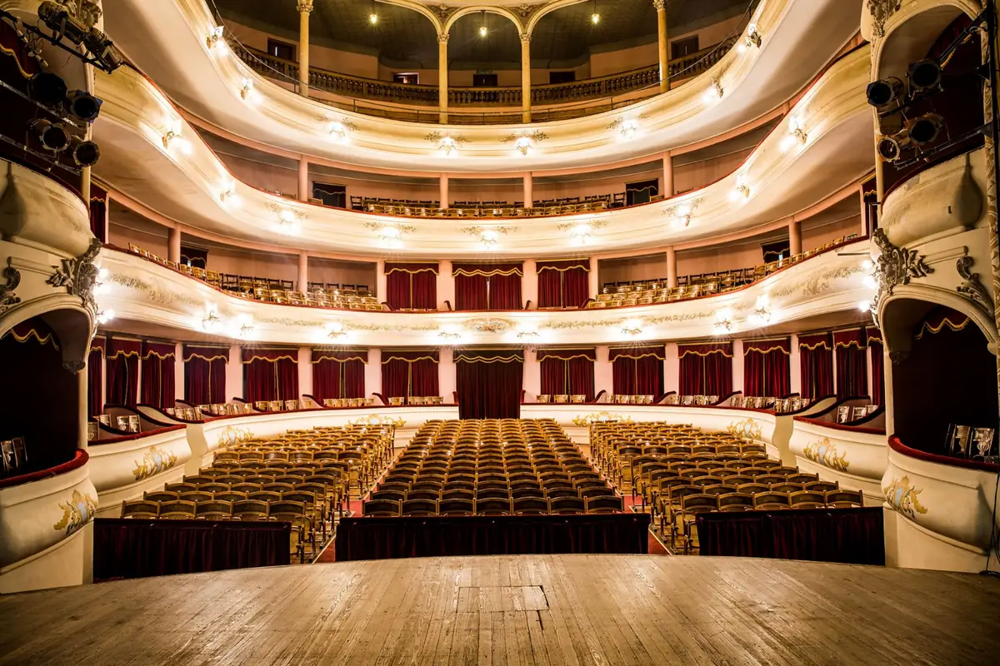
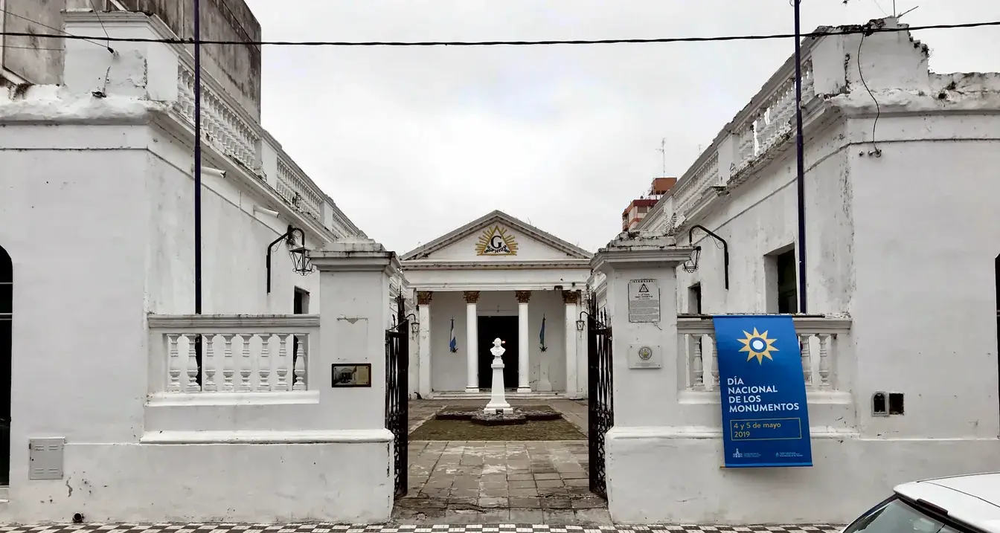
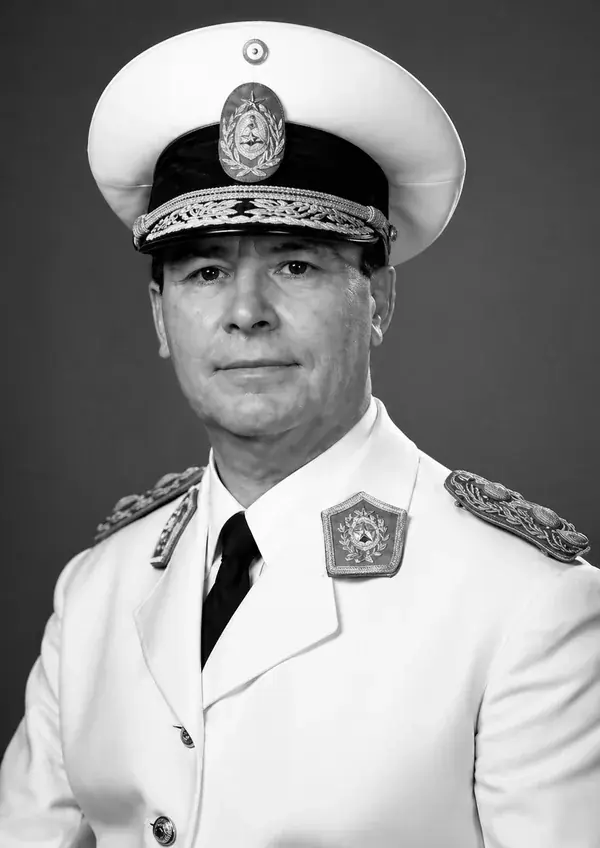

LOGIA INGENIERO MANUEL SAVIO Nº 567 · SAN NICOLÁS DE LOS ARROYOS
Te sobran preguntas y te falta dónde hacerlas.
Somos una fraternidad de librepensadores, donde trabajamos juntos las preguntas que no tienen lugar afuera, y donde te volvés la mejor versión de vos mismo.
Preguntas incómodasLo que escuchaste, y lo que es
Las dudas con las que llega casi todo el mundo.
¿Son una religión o una secta?
Es lo primero con lo que se asocia, y tiene sentido preguntarlo. La respuesta corta es no. La masonería no impone un credo, no promete salvación y no te pide que renuncies a lo que ya creés. Reconoce la razón como única autoridad para investigar y combate el fanatismo en todas sus formas.
Donde una religión te ofrece respuestas, acá vas a encontrar las herramientas para construir las tuyas. Lo que sí pedimos, y lo decimos con honestidad, es reconocer un principio superior que cada uno entiende a su manera. Se respetan todas las creencias y no se impone ninguna. No es un espacio religioso, pero tampoco un refugio para el ateísmo militante. No es un credo. Es un método.
¿Es un círculo de poder y de contactos?
El poder que nos interesa no es el que se ejerce sobre los demás, sino el que cada uno ejerce sobre sí mismo, forjando el carácter y la conducta. Y cada vez que ese poder se volcó hacia afuera, fue para darle a la ciudad algo que le faltaba.
Primero, lo indispensable: una escuela gratuita para quienes no tenían cómo pagar la suya, un comité de auxilio cuando el cólera de 1884 desbordó San Nicolás, la primera sucursal del Banco Provincia del interior bonaerense, cuando el crédito todavía no llegaba a la región. Después, lo que vuelve a un lugar digno de habitarse: el Club de Regatas, que hizo del Paraná un sitio de encuentro y no apenas un límite, y el teatro que hoy lleva el nombre de Rafael de Aguiar, donde la ciudad aprendió a mirarse a sí misma. Detrás de cada obra hubo una sola intención, poner el poder al servicio de la ciudad y no servirse de ella.
Y si lo que buscás son contactos para progresar, mejor te lo decimos de frente. Nuestras propias reglas lo impiden. La institución pide que ya tengas tus medios de vida, y se sostiene con la cuota de quienes la integran. Para hacer contactos hay caminos más rápidos. Para volverte un hombre mejor, este es el camino.
¿Por qué tanto secreto?
Conviene separar dos palabras que se confunden seguido: secreto y discreción. No somos una sociedad secreta, somos una sociedad discreta, y la diferencia lo cambia todo. Una sociedad secreta esconde que existe; nosotros tenemos dirección. El templo está en pleno centro de San Nicolás, a la vista de cualquiera que pase. Es el más antiguo en pie del país, y se construyó para estar ahí, no para ocultarse.
Se puede visitar coordinando una fecha, y las logias abren sus puertas en las tenidas blancas, charlas donde exponemos nuestras ideas al público sin reserva.
¿Para qué, entonces, la discreción? Para cuidar dos cosas que lo merecen. Una es un espacio donde cualquier idea se pone sobre la mesa sin el ruido ni el juicio de afuera, porque se piensa mejor cuando no hay que quedar bien con nadie. La otra es la intimidad de cada uno. Lo que alguien viene a buscar acá es asunto suyo, no un espectáculo. La discreción no es lo contrario de la transparencia, es lo que la hace posible. Una sociedad secreta no figura en ningún mapa. Nosotros estamos en el centro, y si golpeás, quizás te abramos.
¿Quién puede entrar?
Esta logia inicia varones, y lo decimos sin rodeos. Si sos mujer y sentís el llamado, tu interés es genuino y merece una respuesta a la altura. Existe la Gran Logia Femenina de la Argentina, donde este mismo camino está abierto.
Y si sos un hombre que quiere iniciarse, no te pedimos lo que muchos suponen. No pesan la fortuna, ni el apellido, ni una inteligencia excepcional. Si ya sos mayor de edad, lo que cuenta no se compra ni se hereda. Ser libre y de buena conducta, capaz de sostenerte por tus propios medios, y con la voluntad de comprender y practicar lo que acá se trabaja. Y, en el plano de las creencias, lo que ya dijimos, reconocer un principio superior, sin religión ni dogma de por medio.
A esta puerta no la cierra de dónde venís ni qué tenés. La abre o la cierra una sola cosa, y depende de vos. La seriedad con que la cruzás. No es para cualquiera, y esa es justamente la idea.
Hasta acá, lo que no somos. Lo que somos se puede ver.
Los nombres ya los conocés.
Caminá por la ciudad y mirá a quién honra cada esquina. Morteo, León Guruciaga, Dámaso Valdés, Lisandro de la Torre, Viale, Boerr, Cernadas. San Nicolás los grabó en sus calles. Y antes de ser nombres de calle, fueron hombres con las mismas preguntas que vos. Lo que casi nadie sabe es que todos pertenecieron a la misma casa. La nuestra.

Serafín Morteo condujo la ciudad durante más de dos décadas, y tuvo una ambición que pocos entendieron entonces. Quería que una ciudad como la nuestra tuviera un teatro lírico a la altura de las grandes capitales. De esa convicción nació el Teatro Municipal, hoy Monumento Histórico Nacional y todavía lo más bello que dejó su generación.

La logia donde aquellas ideas tomaban forma la fundaron el coronel José Antonio Melián, granadero de San Martín, y el general Wenceslao Paunero, entre otros. Melián sirvió a las órdenes del Libertador y después eligió esta ciudad para fundar nuestra casa. El templo llegó en 1870, y es el mismo que sigue en pie. La historia grande del país y San Nicolás se tocan en él.
Una casa del tamaño del país
El propio San Martín se había iniciado en Cádiz, y no fue el único. Belgrano y Alem también pertenecieron a nuestra Orden, y la nómina de presidentes masones recorre casi entera la historia argentina. Rivadavia, Urquiza, Mitre, Sarmiento, Pellegrini, Yrigoyen, Perón, Alfonsín. De las esquinas del centro a las caras de los billetes, de la independencia al regreso de la democracia.
El nombre que elegimos

Al general Savio lo tenés más cerca de lo que creés. Está en un barrio, en escuelas, en la avenida. Hasta la planta siderúrgica de SOMISA llevó su nombre.
San Nicolás creció con este ingeniero militar, que le dio su identidad de acero, convencido de que un país que no funde su propio metal queda a merced de otros. La industria del acero, dijo:
«La necesitamos como hemos necesitado nuestra libertad política.»
Murió en 1948, sin ver encendidos los hornos que había imaginado. Nunca perteneció a la Orden, y aun así esta logia lo eligió, porque fue, ante todo, un constructor. Como nosotros.
Nuestra herencia está en las calles y en los libros. Se puede visitar, leer, comprobar. Lo único que no vas a encontrar ahí es lo que despierta en vos cuando empezás a preguntar. Para eso, del otro lado, hay alguien esperándote.
Lo último que vas a leer en esta página. Lo primero que vas a escribir.
No te vamos a pedir tus datos. Te vamos a pedir una pregunta. Y quien te responde es de la casa.
Y si tenés una más incómoda, empezá por esa. Sin vueltas y sin compromiso.
El Guardián es una IA de esta logia. No te pedimos ningún dato: la charla es anónima, pero el texto queda guardado para mejorarlo. El resto, en nuestra política de privacidad.